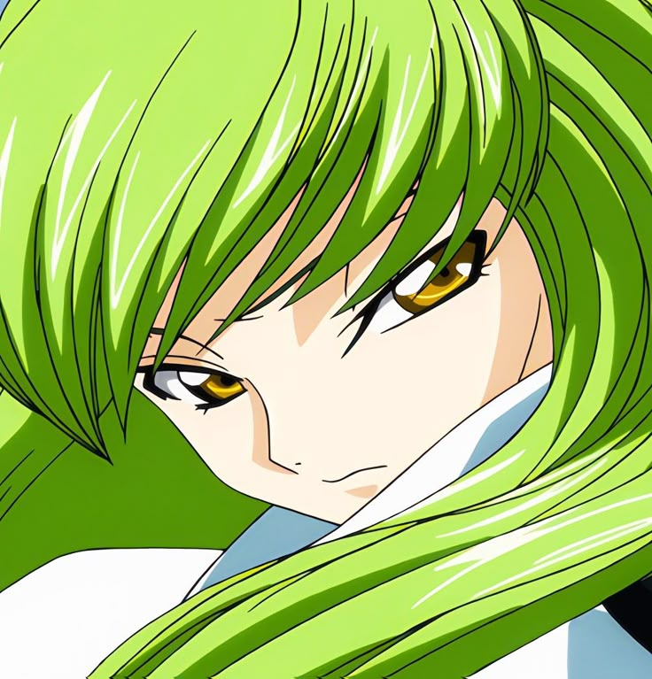

XANNYLİVE
// PRO CS2 CONFIG & OPTIMIZATION
// DETAYLI CONFIG & AYARLAR
Çözünürlük: 1280x960 (4:3 Stretched)
Görüntü Modu: Tam Ekran
Boost Player Contrast: Etkin
Wait for Vertical Sync: Devre Dışı
Current Video Preset: Custom
Multisampling Anti-Aliasing: 4x MSAA
Global Shadow Quality: Yüksek (Rakip gölgeleri için kritik)
Model / Texture Detail: Düşük
Shader Detail: Düşük
Particle Detail: Düşük
Ambient Occlusion: Devre Dışı
High Dynamic Range: Performance
FidelityFX Super Resolution: Devre Dışı (Highest Quality)
NVIDIA Reflex Low Latency: Etkin + Takviye
HUD Scale: 0.85
HUD Color: Team Color (Purple)
Radar HUD Size: 1.15
Radar Map Zoom: 0.40
Radar Rotate: Yes
Viewmodel Komutları (Console):
viewmodel_fov 68;
viewmodel_offset_x 2.5;
viewmodel_offset_y 0;
viewmodel_offset_z -1.5;
Image Sharpening: Kapalı
Vertical Sync: Kapalı
Low Latency Mode: Ultra
Power Management: Prefer Maximum Performance
Texture Filtering - Quality: High Performance
Anisotropic Filtering: 4x
Digital Vibrance: 85% (Renk canlılığı için)
Monitor Technology: G-SYNC (Kapalı)